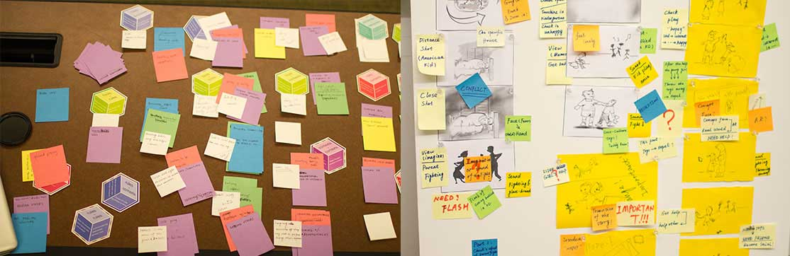
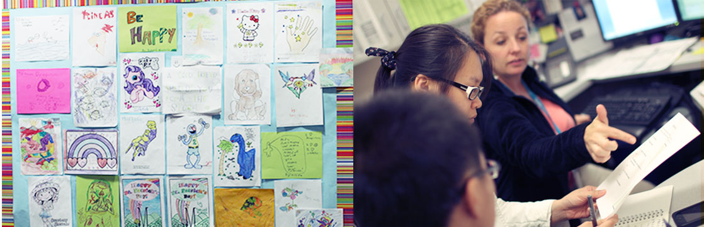
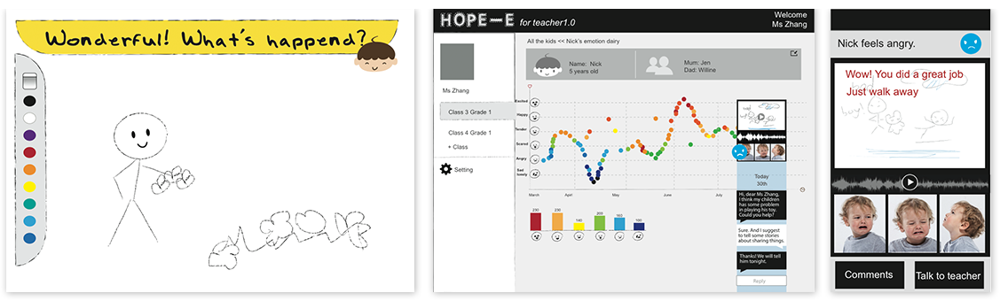
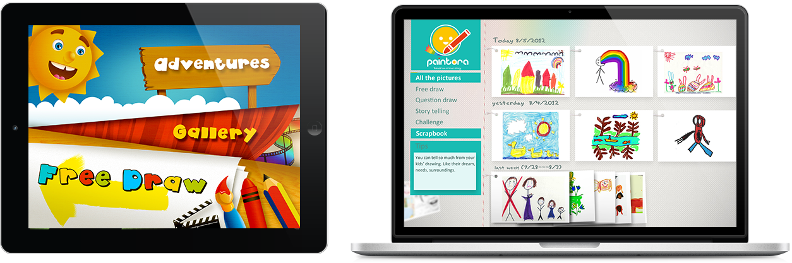

paintora
Design the painting tablet application Help millions of children develop healthyFour person’s project
2012.7-2012.9
Background
For many young children, communicating emotional subjects, even to their parents, is difficult . Paintora is a drawing app inspired by Art Therapy that helps children learn this important skill. Paintora prompts children with psychological cues to help them communicate through drawings. Children can draw freely and express their concerns. A web-based observation platform for parents allows understanding of the child’s work and, more importantly, lets them get to know their child better.
Brainstorming
Our mission is to create a device that betters a child’s mental health by allowing her to record her mental status through the act of storytelling and journaling; to help her achieve some sense of self and security at an early age, and project that awareness for mental health into adolescence and adulthood as the ultimate goal. We did brainstorming with activity based method. And had some interview with kindergarten teachers. Finally we decide to make a storytelling device, by which children can share their stories to the parents, teachers, friends as a easy communication way that can be understand...
User Study
We want to help children grow healthy through solving the their communication problem with the adult. We did user research in Seattle Children Hospital, and some kindergarten. And we find drawing is children’s nature talent and their drawings does’t lie. Painting therapy is already used in some Children Hospital as a psychological treatment. So we make persona and scenarios based on the paintings.
We want to design something to let parents/ doctor know their children better through their drawings, so we use some simple question and some questions based on psychology.
Interaction design & Prototype
According to the scenarios, I began to design the interaction for the user testing prototype. The whole system is divided into three parts . For children, there will be a sample drawing tablet app to record their everyday’s stories with some psychology basis guiding question For teacher part, some analysis function are provided. And for parents, they can see the drawings in real time and can have some sample interaction with their children like comment by recording voice or draw together.
User Test
We make a paper prototype to have a quick feedback with children's, parents, kindergarden teachers and child psychiatrist in the Seattle. And we got the positive feedback from the teachers and parents, but some problems are explosed when test with children and teacher. We find it’s complicated for teachers and a little boring for children. So we add some game elements in the children‘s part and cut the teachers’ part.
UI design & Implementation
Finally, Paintora is come out. After simplify the main features, I design the table application UI for children, and website for parents. In children’s part, they can choose to draw something free, or pick up game mode to finish some challenge drawing tasks. In the game mode, all the challenges are designed based on the communication problems and psychological basis. In parents’ part, parents can check children's painting in real time and can share it to other social network. Also a precious growth trajectory was record by paintora. Parents can print them out as a souvenir.
Team & Awards
This is the our team and mentors.Thanks to this project, I make many new friends. And we did a presentation in both Washington University and Academy of Art and Design, Tsinghua University. We won the first prize of the Tsinghua & Nanhai Startup Competition in 2013.